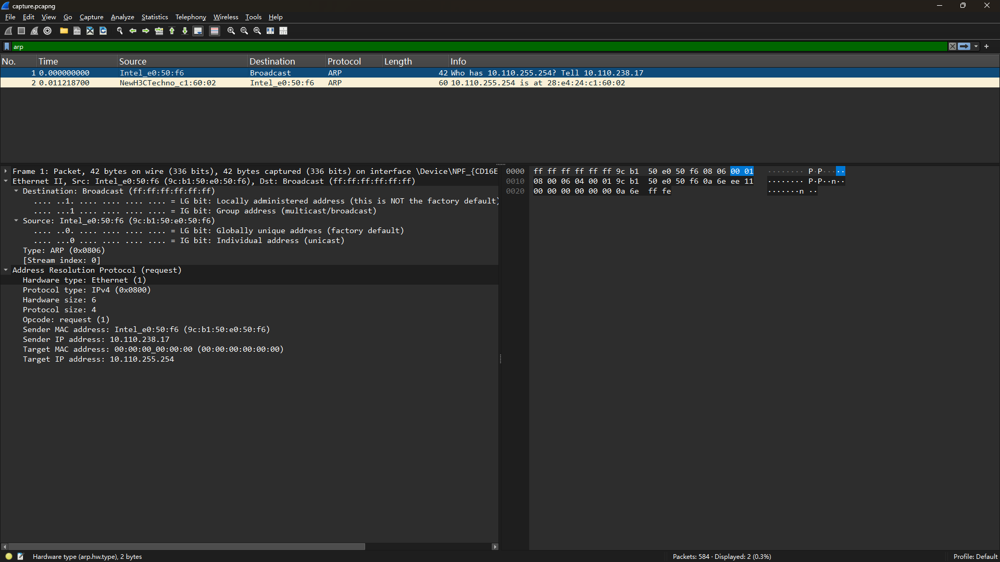
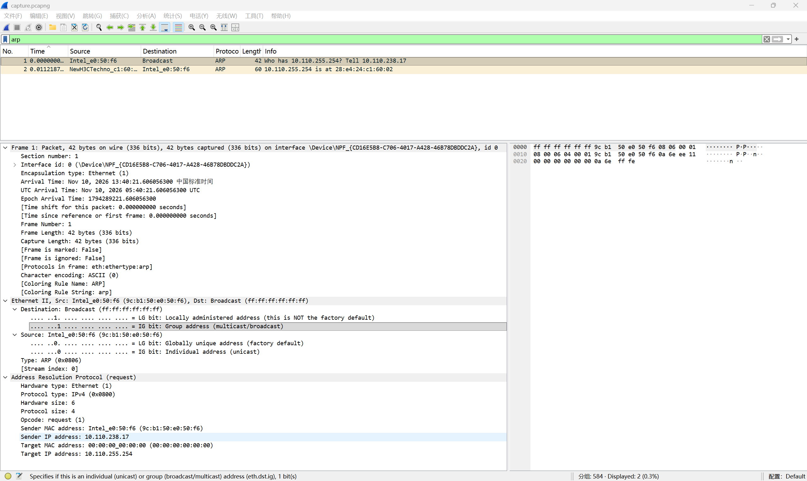
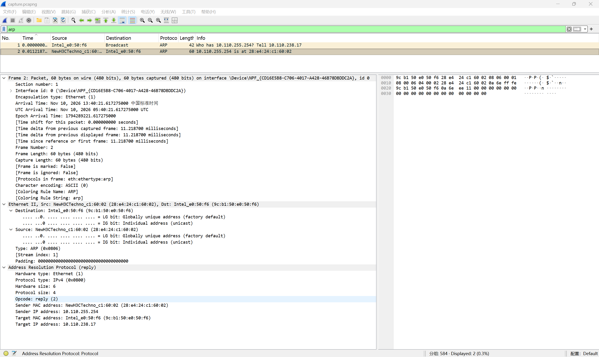
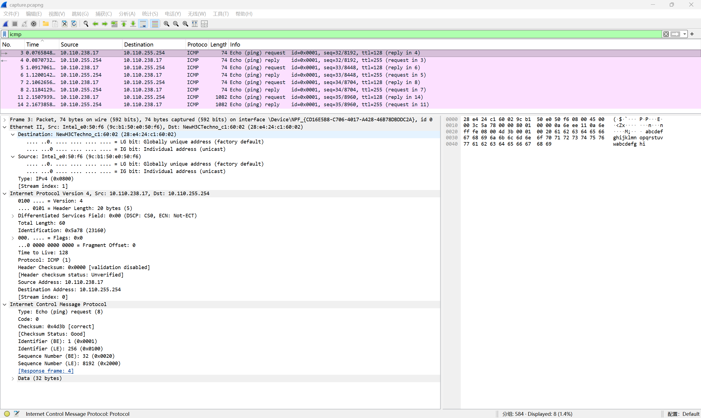
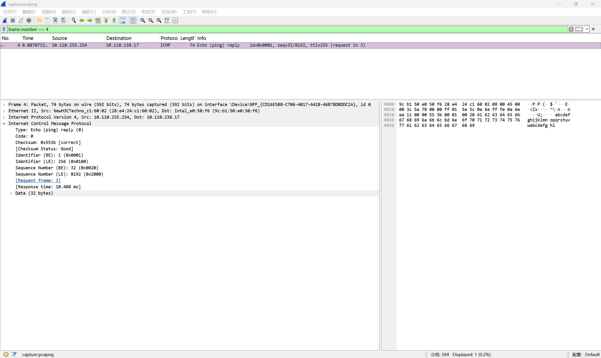
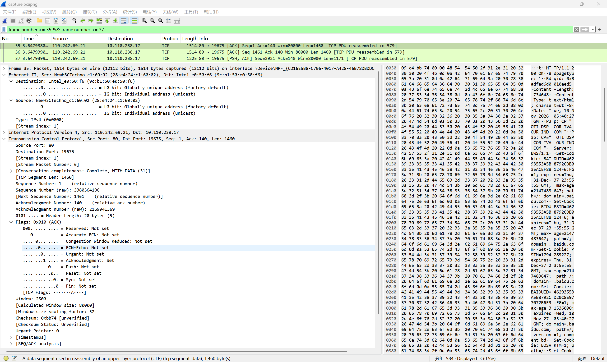
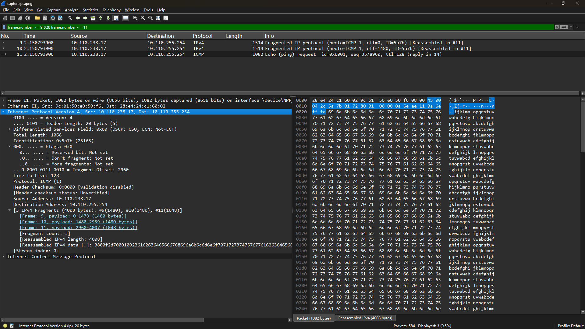
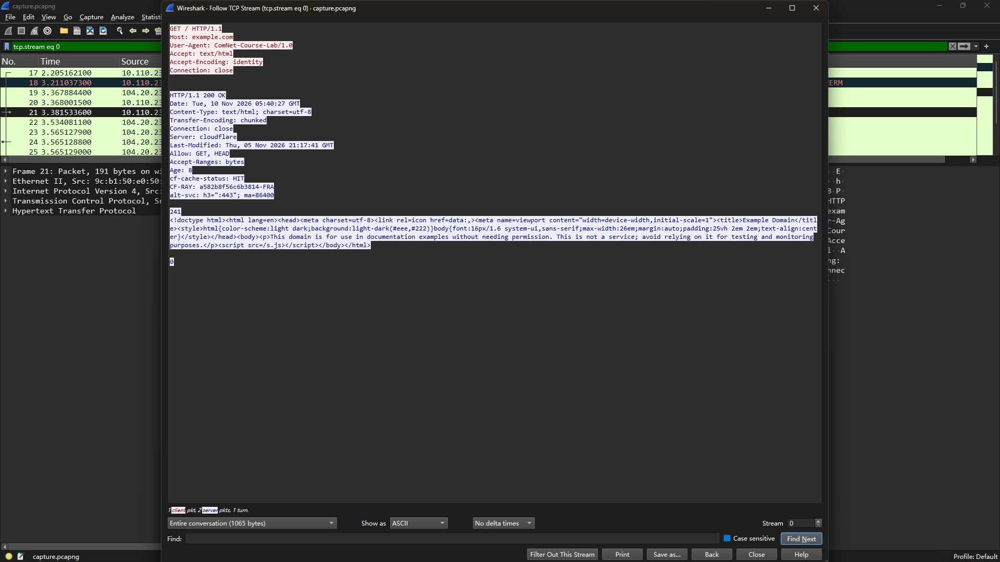

用途：现场投屏 + 逐页口述；建议演示约 8—10 分钟，可根据教师要求删减。
素材：本次上传的《过程截图(1).zip》（浅色界面，主要证据）与此前《答辩演示.rar》（补充 DNS、软件界面和分层信息）；截图均为原文件复制，未重绘报文内容。
本轮证据边界（2026-11-16）：本地已找到并只读核验 2026-11-10 保存的权威
evidence/final_npcap/capture.pcapng，共584帧。S01—S06是本轮对历史文件新拍的真实 Wireshark 4.6.9 窗口，不是新抓网络流量。原图21张在解压基线中保留；交付副本中的图20对含 Set-Cookie 的字节区做明确遮挡，其余20张原样复制。原始抓包不公开打包；文件指纹及选定字段见 登记表 和evidence/。帧号和流号只对该文件有效。
时间安排：保留原11环节与17幅关键旧图；原定约8分15秒，S02/S03合讲25秒、S04讲20秒、S01讲25秒，总计约9分25秒（建议值，未计真人排练）。S05/S06放学习版扩展。
assets/ 文件夹放在同一目录，用 VS Code
Markdown 预览、Obsidian 阅读视图或支持 Markdown
图片的播放器打开。不要只拷贝 .md 而丢掉
assets/。capture.pcapng；确保过滤栏绿色，截图中的帧号与当前文件一致。本机已核验原文件；换机时先核对SHA-256，不能仅凭同名文件沿用帧号。example.com 的完整
HTTP 访问；B 是 www.baidu.com 的 TCP 分段；C 是面向网关的
ICMP 与 IPv4 分片。这三组不是同一次 TCP 连接。
现场操作：如有抓包文件，File → Open → capture.pcapng，观察上方的报文列表、中部的协议字段树和右侧/下方的十六进制字节区。过滤栏输入
arp 体验显示过滤。
答辩词
各位老师好，我们的选题是“基于 Wireshark 的协议分析实验”。实验在校园网环境下进行，目标不仅是捕获数据，还要解释数据为什么按照这样的协议顺序传输。我们先用 ARP 和 ICMP 验证本地寻址与连通性，再分析 TCP 建连、数据分段和释放，最后结合 DNS 与 HTTP，说明从校园网访问外部 Web 服务器的完整过程。图中上方是数据包列表，下方展示所选报文的协议字段和原始字节。我们使用显示过滤器逐步定位证据，而不是仅凭报文颜色判断协议。
本页证明：实验分析采用“找到帧 → 查看字段 → 关联上下文 → 归纳原理”的方法。捕获过滤器决定抓取前保留哪些包；显示过滤器仅控制已有包的显示。
现场操作：清空显示过滤器并回车 → Statistics → Protocol Hierarchy。
关键字段与答辩词：Frame 584；IPv4 582；TCP 566（96.9%）；DNS 4；ARP 2。不同协议层可重复计入同帧。这些数据来自No display filter；584帧。
本图结论：补充软件界面；仅本文件统计。

现场操作：清空过滤器 → Statistics → Conversations → TCP。
关键字段与答辩词：stream 0：19664↔︎80，12帧，1.520183 s；stream 1：19675↔︎80，554帧，0.249841 s。这些数据来自全文件；两个TCP会话。
本图结论：确认两样本不同连接；图中Bytes为UI约数。


现场操作：输入 arp，选择帧 1、2，展开
Ethernet II 与
Address Resolution Protocol，对照
Opcode、Sender/Target IP、Sender/Target MAC。
答辩词
本机地址为
10.110.238.17，默认网关为10.110.255.254。帧 1 是 ARP 请求：本机还不知道网关对应的 MAC，所以将以太网目的地址设为广播地址ff:ff:ff:ff:ff:ff，询问“谁拥有这个网关 IP”。请求的操作码是 1，ARP 目标 MAC 全零意味着待解析。帧 2 是网关的应答，操作码变为 2，返回 MAC 地址28:e4:24:c1:60:02。这样本机就知道：以后发往外网的帧，在本地这一跳应先交给网关。
本页证明：ARP 解析的是本地下一跳 MAC，不是外部网站服务器的 MAC。


现场操作：过滤 icmp；依次选择帧 3 和
4，展开 Internet Control Message Protocol，定位
Type、Code、Checksum、Identifier、Sequence Number、Data。
答辩词
ICMP 是网络控制报文协议，常用于诊断可达性。图中帧 3 是 Echo Request，
Type=8、Code=0；帧 4 是 Echo Reply，Type=0、Code=0。请求与应答的源、目的 IP 正好相反，标识符和序列号可以帮助匹配同一轮 ping。帧 3 的 IPv4 总长度为 60 字节，减去 20 字节 IPv4 首部和 8 字节 ICMP 首部，得到 32 字节回显数据。它验证的是当时本机到网关的往返通信成功，不能据此推断校园网永远没有丢包。
本页证明：报文类型、标识和序列字段共同支撑“请求—应答”关系；TTL
属于 IPv4 首部，而不是 ICMP 字段。


现场操作：输入
frame.number == 17 || frame.number == 19 || frame.number == 20，逐帧查看
TCP 的 Flags、Seq、Ack，也可使用
tcp.stream == 0 查看这一整条连接。
| 帧 | 方向 | 标志位 | 相对序号 | 原理 |
|---|---|---|---|---|
| 17 | 本机 → 104.20.23.154:80 |
SYN | Seq=0 | 发起连接 |
| 19 | 服务器 → 本机 | SYN, ACK | Seq=0, Ack=1 | 确认客户端的 SYN，同时同步服务器序号 |
| 20 | 本机 → 服务器 | ACK | Seq=1, Ack=1 | 确认服务器 SYN，连接建立 |
答辩词
TCP 是面向连接的传输协议。第一次握手由客户端发送 SYN，第二次由服务器返回 SYN 和 ACK，第三次由客户端再发 ACK。这里 Wireshark 默认显示相对序列号，所以首个 SYN 看起来是
Seq=0，并不是 TCP 真正的随机初始序列号固定等于零。第二次握手的Ack=1，是因为 SYN 本身消耗一个序号。三次握手使双方确认收发方向可用，并同步传输所需的初始序号及协商参数。本次示例连接的客户端端口是 19664，服务器端口是 80。
本页证明：SYN → SYN,ACK → ACK
的三帧顺序与 Seq/Ack 关系对应 TCP 建连机制。

现场操作：输入
frame.number == 25 || frame.number == 26 || frame.number == 27 || frame.number == 290，比较方向、标志位以及
Seq/Ack。
答辩词
本次连接由服务器先发起释放：帧 25 是
FIN,ACK，帧 26 是客户端确认，帧 27 客户端也发送FIN,ACK，最后帧 290 是服务器确认。FIN 和 SYN 一样会占用一个序号。例如服务器发送Seq=929的 FIN 后，客户端确认号是Ack=930。帧 290 与前面帧号相差很远，是因为抓包文件同时记录了其他连接；并不表示同一连接中间丢掉了 263 个包。这里是本次观察到的四个事件，实际 TCP 释放也可能合并报文。
本页证明：TCP 可以分别关闭两个方向；FIN、ACK 的对应关系可由序号验证。

现场操作：输入
frame.number >= 35 && frame.number <= 37；查看
TCP
Sequence Number、Next Sequence Number、TCP Segment Len。
| 帧 | 相对 Seq | TCP 数据长度 | Next Seq |
|---|---|---|---|
| 35 | 1 | 1460 B | 1461 |
| 36 | 1461 | 1460 B | 2921 |
| 37 | 2921 | 1171 B | 4092 |
答辩词
这组数据来自对
www.baidu.com的另一条 TCP 连接，并非前面的example.com。第一段携带 1460 字节，下一段就从序号 1461 开始；第三段从 2921 开始，说明 TCP 按字节连续编号。对前两段，14 字节以太网首部 + 20 字节 IPv4 首部 + 20 字节 TCP 首部 + 1460 字节数据 = 1514 字节，其中 IPv4 部分恰为 1500 字节。这是 TCP 把应用字节流分成多个段，不表示这些帧发生了 IPv4 分片。
本页证明：TCP 以字节为单位编号、可跨多个段传输一份应用响应；前三段不代表完整网页大小。

现场操作：输入
frame.number >= 9 && frame.number <= 14，查看请求方向的帧
9、10、11，展开 IPv4 的
Identification、Total Length、More Fragments、Fragment Offset。
| 帧 | IP 总长度 | IP 载荷 | 偏移（字节） | MF |
|---|---|---|---|---|
| 9 | 1500 B | 1480 B | 0 | 1 |
| 10 | 1500 B | 1480 B | 1480 | 1 |
| 11 | 1068 B | 1048 B | 2960 | 0 |
答辩词
这里是第三组独立实验：向校园网网关发送了一个较大的 ICMP 回显报文。三片的 IPv4 标识值相同，都是
0x5a7b。因为链路 MTU 是 1500 字节，每片要留出 20 字节 IPv4 首部，前两片最多各装 1480 字节载荷。偏移分别是 0、1480、2960 字节，彼此首尾相接，最后一片MF=0表示后面没有更多分片。总 IP 载荷是1480+1480+1048=4008字节，加上原本 20 字节 IP 首部，原始 IP 数据报应为 4028 字节，所以需要分片。注意 TCP 分段发生在传输层，而这里发生在 IPv4 网络层。
本页证明：使用
Identification + MF + Offset + 长度 可以验证分片关系；IPv4
原始片偏移字段以 8
字节为单位，界面已换算为字节偏移。

现场操作：frame.number >= 9 && frame.number <= 11 → 选11 → 展开IPv4、Flags、3 IPv4 Fragments。
关键字段与答辩词：ID=0x5a7b；末片MF未设置；偏移2960 B；三片1480+1480+1048=4008 B。这些数据来自9/10/11；网关ICMP请求方向。
本图结论：补充图11；真实3片关联树。

现场操作：输入 dns；选择帧 15 和
16，展开 Domain Name System
的查询与应答信息。必要时再比较帧 28、29 的百度域名解析。
答辩词
打开网站时，用户使用域名，而 IP 层需要地址。帧 15 向校园网配置的 DNS 服务器查询
example.com，帧 16 返回了 IP 地址，其中本次 TCP 连接使用了104.20.23.154。另一组帧 28、29 是www.baidu.com的解析，属于前面 TCP 分段样本。DNS 解决的是域名到地址的映射，ARP 解决的是本地下一跳 IP 到 MAC 的映射，两者作用不同。
本页证明：本次 Web 主线使用的服务器 IP 与 DNS 应答相互吻合。


现场操作：使用
http.request || http.response；选择帧 21、24，依次展开
Hypertext Transfer Protocol。如要连握手也看到，改用
tcp.stream == 0。
答辩词
TCP 连接建立之后，客户端在帧 21 发送
GET / HTTP/1.1，并携带Host: example.com，表示请求这个站点的首页。帧 24 收到了HTTP/1.1 200 OK响应，说明服务器成功处理了这次 HTTP 请求。该响应在 Wireshark 中包含 TCP 重组信息，因此不能简单认为整个响应都装在帧 24 的单个 TCP 载荷里。截图给出的从请求到响应的观察间隔约为 183.6 毫秒，但它包含服务器处理等因素，不能直接当作纯网络 RTT。
本页证明：一次 GET 请求及其
200 OK 响应构成可观察的 HTTP/1.1 交互。此处是明文
HTTP，不代表 HTTPS 内容同样能直接读取。

现场操作：frame.number == 21 → 选中21 → Analyze → Follow → TCP Stream。
关键字段与答辩词：GET /、Host: example.com 与 HTTP/1.1 200 OK 同流；137 B 请求+928 B响应=1065 B。这些数据来自tcp.stream == 0，12帧；应用字节流1065 B。
本图结论：补充图13/14；无可见认证字段。


现场操作：输入
frame.number == 21，在同一帧依次展开
Ethernet II → Internet Protocol Version 4 → Transmission Control Protocol → Hypertext Transfer Protocol。这里三图是旧压缩包补充的同一报文不同层级截图。
| 层次 | 本次帧 21 的字段 | 作用 |
|---|---|---|
| 链路层 | 9c:b1:50:e0:50:f6 → 28:e4:24:c1:60:02 |
先送到本地网关 MAC |
| 网络层 | 10.110.238.17 → 104.20.23.154 |
指向最终 Web 服务器 IP |
| 传输层 | 19664 → 80 |
定位客户端 TCP 会话与服务器 HTTP 服务端口 |
| 应用层 | GET / HTTP/1.1、Host: example.com |
说明具体访问的网页资源 |
答辩词
这一帧是整个实验最重要的综合证据。我们逐层展开同一个帧 21：以太网层的目标 MAC 是本地网关，而网络层目的 IP 却是外部服务器。这不是矛盾，因为 MAC 负责当前这一跳，IP 负责跨网络寻址。TCP 层用端口号区分应用通信，最后 HTTP 说明要请求什么资源。也就是说，HTTP 数据被 TCP 段承载，再封装进 IPv4 数据报，最后封装进本地链路的帧。抓包位置在本机，因此只能直接证明本机所见的链路与协议字段，不能说我们观察到了互联网中每台路由器的内部转发。
本页证明：完成题目要求的 MAC → IP → TCP → HTTP 逐层分析。
通过这次实验，我们不只认识了 Wireshark 的过滤器，还用实际字段解释了：ARP 如何发现网关 MAC、ICMP 如何报告回显结果、TCP 如何建立和释放连接、如何按字节分段、IPv4 为什么会分片，以及 DNS 和 HTTP 怎样协同完成一次外网访问。不同结论分别对应明确的帧号和截图。以上是我们的答辩内容，谢谢老师。
| 目标 | 显示过滤器 | 要看的证据 |
|---|---|---|
| ARP | arp |
1/2 的请求和应答 |
| ICMP | icmp |
3/4 的 Type、Code、ID、Seq |
| TCP 三次握手 | `frame.number == 17 | |
| 单条 Web TCP 连接 | tcp.stream == 0 |
含建连、HTTP、释放的全部 TCP 帧 |
| TCP 释放 | `frame.number == 25 | |
| TCP 分段 | frame.number >= 35 && frame.number <= 37 |
Seq 和 Len |
| IP 分片 | frame.number >= 9 && frame.number <= 14 |
ID、MF、Offset |
| 所有分片候选 | `ip.flags.mf == 1 | |
| DNS | dns |
15/16 和 28/29 |
| HTTP 请求/响应 | `http.request | |
| 跨层分析 | frame.number == 21 |
Ethernet II / IPv4 / TCP / HTTP |
说明：上表均为显示过滤器，输入位置是 Wireshark 主窗口顶部绿色过滤栏；不是在开始抓包前的 Capture Filter 中输入。
1. 为什么 Wi-Fi 抓包显示 Ethernet II，而非 802.11？ 普通 Windows + Npcap WLAN 抓包可能以网卡提供的 Ethernet II 链路格式显示；不能据此宣称抓到了完整 802.11 空口管理帧。
2. ARP 和 DNS 有什么区别？ DNS 解决域名到 IP 的查询；ARP 解决本地 IP/下一跳 IP 到 MAC 的地址解析。
3. TCP 分段与 IP 分片是一回事吗？ 不是。TCP 分段在传输层，以字节序号组织数据；IPv4 分片在网络层，针对一个过大的 IPv4 数据报使用 ID、MF 和 Fragment Offset 组织分片。
4. 为什么 Seq=0？ Wireshark 默认启用“相对序列号”；展开 TCP 还能看到原始序列号。
5. 为什么第 27 帧后是第 290 帧？
帧号是整个抓包文件的全局编号，中间可以插入其他连接的报文。只看该连接时用
tcp.stream == 0。
6. Checksum Unverified 表示报文错误吗？
不一定；可能受本机网卡校验和卸载、验证设置及抓包位置影响，不能直接判定链路错误。
7. 是否能从本机截图证明 NAT 的映射和公网出口？ 不能；本机只能看见本机发出的私有地址报文，不能据此确定网关外侧 NAT 映射详情。
8. HTTP 和 HTTPS 抓包有什么区别？ 本次明文 HTTP/1.1 的方法、请求头和状态行可直接查看；HTTPS 通常经 TLS 加密，未获解密条件时不能直接读取这些应用数据。
9. 这些截图是现在现场新抓的吗？ 不是。这些是之前实验保存的真实抓包截图。旧演示稿将采集日期记录为 2026 年 11 月 10 日；本轮只读复核584帧，并新增S01—S06软件窗口截图；未再次抓取网络流量。
10. 如何说明你们确实会用 Wireshark？ 现场展示
arp、icmp、tcp.stream == 0、frame.number == 21
等显示过滤，展开协议树解释关键字段，而不是只翻静态图片。
[1] Wireshark Foundation. Wireshark User's Guide.
[2] Wireshark Foundation. Wireshark Display Filter Syntax.
[3] D. Plummer. RFC 826: An Ethernet Address Resolution Protocol.
[4] J. Postel. RFC 792: Internet Control Message Protocol.
[5] J. Postel. RFC 791: Internet Protocol.
[6] W. Eddy (Ed.). RFC 9293: Transmission Control Protocol.
[7] P. Mockapetris. RFC 1035: Domain Names—Implementation and Specification.
[8] R. Fielding et al. RFC 9110: HTTP Semantics.
[9] R. Fielding et al. RFC 9112: HTTP/1.1.
参考文献用于协议规则和软件功能的标准定义；实际帧号和测量值来自历史截图以及本轮只读核验的权威抓包（详见登记表），不由 RFC 证明。